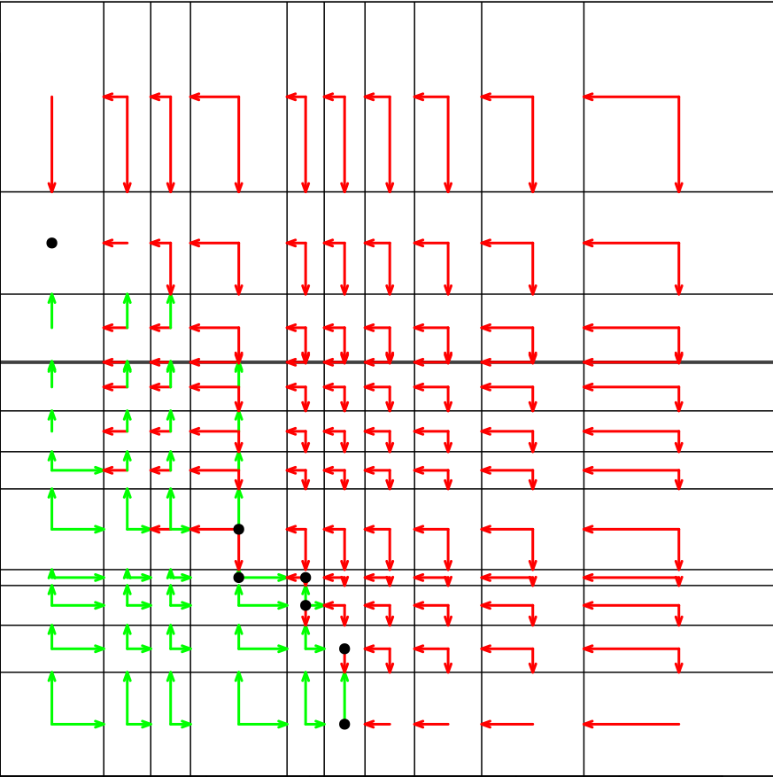
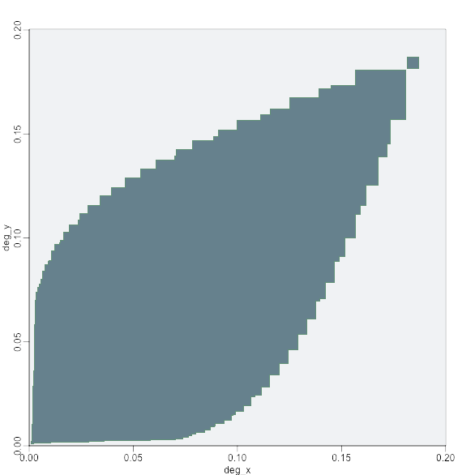

Student: Samuel Pastva
Advisor: prof. RNDr. Luboš Brim, CSc.
Student: Samuel Pastva
Advisor: prof. RNDr. Luboš Brim, CSc.
- Many researchers in biology, physics, economy and other scientific fields rely on formal models when studying complex systems ocurring in the real world.
- Such models often contain parameters which influence the model behaviour. Exact values of the parameters are usually hard to measure or completely unknown.
- To determine the exact influence of parameters on the model behaviour is crucial to our understanding of these models and to the evaluation of their soundness.
- Parameter Synthesis Problem: For a given model and a given property, compute parameter valuations under which the model satisfies the property.
- We focus on models developed in systems biology based on ordinary differential equations (ODE) and properties given in the hybrid computation tree logic (HUCTL) developed at our laboratory.
- Our algorithm [1] is based on model checking, which is a common verification technique. However, to deal with the parameter uncertainty, we work with a symbolic parameter space representation, which exploits the similarities between close parameter valuations while still allowing effective parallelisation.
- The decisions about the symbolic parameter sets are translated to SMT queries and delegated to an appropriate solver.
| 1. The vector field of the ODEs | 2. A multi-affine approximation | 3. A semi-symbolic transition system | 4. Property validity regions |

|
 |

|
Temporal logics are a common framework for expressing properties of transition systems. However, these logics usually rely on quantitative information to express behavioural properties (Is there an attractor where x > 3?). in [2] we extended the computation tree logic (CTL) with hybrid operators in order to reason about general behavioural patterns (Is there an attractor anywhere in the system?).
Stable steady state pattern: ↓ x: AX x
Unstable steady state pattern: ↓ x: EX x
General attractor pattern: ↓ x: AG EF x
Two instances of pattern: ∃ x ∈ pattern : pattern ∧ ¬ EF pattern
We implement our method in an open-source tool Pithya [3]. This tool (at various stages of development) was used for analysis of several real biological models, specifically a model of biodegradation of 1,2,3-trichloropropane using a synthetic pathway in [4], various cell singalling pathway models in [5] or a G1/S transition cycle model in [6].
Try Pithya online at: http://pithya.ics.muni.cz